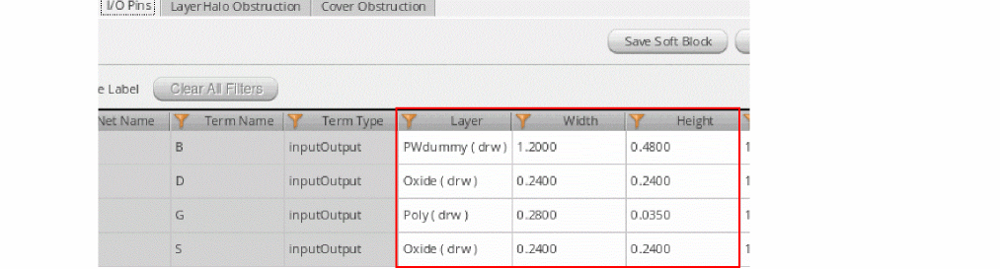
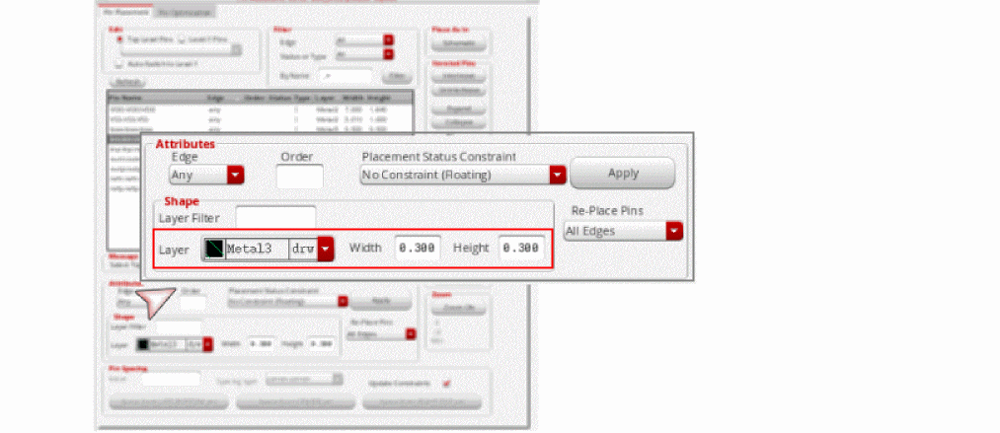

1
Floorplanning: An Overview
This chapter contains the following sections:
- Introduction to Virtuoso Floorplanner
- Floorplanner Prerequisites
- Constraint Group Lookup Precedence
- Layer-Purpose Pair and Voltage Dependent Rules in Floorplanning
- Support for Net PROs in Virtuoso Floorplanner
- Preparing Data for Floorplanning
- Floorplanning Design Flow
- Floorplan Commands
- Using the Floorplanner Command-Line Flow
Introduction to Virtuoso Floorplanner
The Virtuoso Layout Suite includes the Floorplan menu that lets you develop a layout from a schematic in a hierarchical manner. Floorplanner enables you to estimate area and to work with hierarchy early in the design cycle, thus enabling you to adopt a top-down approach to design, a bottom-up approach, or a mix of both methods.
The following diagram shows how Virtuoso Floorplanner fits in the overall Virtuoso design flow:
Some of the powerful Floorplanner features include:
- Pre-Partitioning: Configures the hierarchy, that is creates soft blocks at any level in the logical hierarchy. You can use custom area estimators to determine the block size and classify blocks as digital or custom right at the entry stage.
- Design Initialization: Categorizes blocks as I/O, cores, macros, and custom cells, and provides an intuitive interface to start floorplanning. It also creates grids used for pin and block edge snapping.
- Automatic I/O Placement: Provides a connectivity and constraint-driven I/O placer.
- Automatic Pin Optimizer: A connectivity and constraint-driven feature that honors the edge, order and layer constraints.
Additionally, you can manually customize the layout using the following options:
- Rectilinear Block Support: Includes options to create and edit the PR boundary at the top level (level0) and at the block level (level1). You can apply Chop, Re-shape, Stretch and Move operations at level0 and level1 on multiple PR boundaries with dynamic measurement and automatic pin and edge snapping features.
- Pin Adjustment: Provides options to align, re-layer, and resize pins.
- Net Bundling: Lets you create and edit bundles from nets to keep them together during pin optimization and placement.
- Blockage Support: Lets you to create and edit blockages that are respected by Pin Optimizer and placer.
Floorplanner Prerequisites
Before using Floorplanner, ensure the following:
-
Technology Requirements
Virtuoso® Floorplanner requires technology-specific information about your design to be stored in a technology file for the design library. For information on creating and editing technology files, see:
You can use also use Cadence SKILL functions to query or update the technology file. For more information, see: - Constraint Group Lookup Precedence
-
Licensing Requirements
In IC6.1.8, floorplanning commands require one of the following licenses combined with 4 GXL tokens:
In ICADVM20.1 floorplanning commands require either:
Constraint Group Lookup Precedence
A constraint group lets you specify different sets of design constraints to be applied under different circumstances. This allows the flexibility to experiment with less or more stringent process rules at different stages of the design process. For details about constraint groups and how to create them, refer to the Constraint Groups chapter.
In Virtuoso, you typically have the following constraint groups as a required minimum.
-
Foundry constraint group
TheFoundryconstraints group has the absolute minimum rules that must be followed to create the design. -
Active constraint group
TheActiveconstraints group typically hasvirtuosoDefaultSetupas the default value.
For example during reinitialization, if the minSpacing value for metal3 is required, the floorplanner tool searches the minSpacing value in the Active Window Wire constraint group. If the minSpacing value is found in the Active Window Wire constraint group, it is used. The floorplanner tool then searches for the minSpacing value in virtuosoDefaultSetup and then LEFDefaultRouteSpec and if still not found then in foundry.
The following figure illustrates the flow of how to look at the information from the techfile or design constraints.
The following section lists the technology file rules that Floorplanning tools require in order to work correctly. For more information about how to define these rules, refer to the Virtuoso Technology Data Constraints Reference user guide.
-
minSpacingrequired for all the valid layers and layer purpose pairs -
minWidthfor all the valid layers -
minVoltageSpacingfor all valid layer purpose pairs - Grid information for all the routing metal layers for creating placement and routing grids
-
mfgGridResolutiondefined in technology file for creating manufacturing grid - Preferred routing direction for all the metal layer
- Site definition for creating I/O rows
- Standard and custom via defs and standard via variants defined in the technology file to define the spacing type.
-
minEnclosure(minExtensionDistance) andminOppExtensionbetween the via layer and cut layer to define the spacing type - Routing grid information from technology file for pin snapping
- Placement grid information for instance snapping
- All valid layers defined in the technology file
Layer-Purpose Pair and Voltage Dependent Rules in Floorplanning
While reading the rules from the technology file, Floorplanner now reads layer-purpose-based and voltage-dependent rules, such as minVoltageSpacing, in addition to the layer-only rules. The maximum spacing value available from the voltage-dependent, layer-purpose-based, and layer-based spacing rules is used by Floorplanner as the minimum spacing value. A section of the technology file that defines the minSpacing rules is given below.
("virtuosoDefaultExtractorSetup" nil
spacingTables(
( minSpacing ("metal1" "0.8v")
(( "width" nil nil ) )
(
0.3 0.45
0.4 0.55
)
)
( minVoltageSpacing "metal1"
(( "voltage" nil nil ))
(
0.7 0.60
1.0 0.75
)
)
) ;spacingTables
spacings(
( minWidth "metal1" 0.35 )
( minSpacing ("metal1" "0.5v") 0.30 )
( minSpacing "metal1" 0.25 )
) ;spacings
) ;virtuosoDefaultExtractorSetup
The following table summarizes the minSpacing values derived from the technology file given above. The values in the table are derived based on the lookup order defined for the minSpacing rule.
| Layer Name | Layer Purpose | Constraint Name | Value/Range |
The following examples illustrate how minimum spacing value is determined. The examples are based on the section of the technology file given above.
Consider the following values to know the minimum spacing for Metal1 layer:
Layer Name = Metal1
Purpose = 0.8v
minWidth = 0.35
The spacing values obtained from the table above are as follows:
minSpacing value = 0.45 (snapdown minWidth from 0.35 to 0.3)
minVoltageSpacing value = 0.75 (most conservative value for minVoltageSpacing)
Therefore, minimum spacing for the Metal1 layer is as follows:
MinSpacing Value for (Metal1 0.8v) & width 0.35 = Max of minSpacing & minVoltageSpacing
max (0.45 & 0.75) = 0.75
In this example, consider a scenario where the minimum width for the layer is not specified.
Layer Name = Metal1
Purpose = 0.8v
The spacing values obtained from the table above are as follows:
minSpacing value = 0.55 (max value of the tableSpacing rule)
minVoltageSpacing value = 0.75
Therefore, minimum spacing for the Metal1 layer when minWidth is not specified is as follows:
MinSpacing Value for (Metal1 0.8v)= Max of minSpacing & minVoltageSpacing
max (0.55 & 0.75) = 0.75
Consider the following values for a layer:
Layer Name = Metal1
Purpose = 0.7v
The spacing values obtained from the table above are as follows:
minSpacing value = 0.25 (as purpose ‘0.7v’ does not exists in techfile minSpacing rule, defaults to Metal1 layer minSpacing)
minVoltageSpacing value = 0.75
Therefore, minimum spacing for the Metal1 layer is as follows:
MinSpacing Value for (Metal1 0.7v)= Max of minSpacing & minVoltageSpacing
max (0.25 & 0.75) = 0.75
In the example above, if we have width also defined but the layer-purpose pair is not found in the technology file, then the default layer rule is applied. The value derived from the default layer rule is then compared with the minVoltageSpacing rule to get the maximum of the minSpacing value.
The layer-purpose-based and voltage-dependent rule support has been added for the following Floorplan commands.
- Configure Physical Hierarchy
- Pin Optimization
- Block Placer
- Create Soft Pins
- Snap Pins
- Snap Pins
- Pin Alignments
- Push Pre-Routes
Support for Net PROs in Virtuoso Floorplanner
A net process rule override (PRO) is a constraint defined on a specific net to override the generic foundry and design process rules on that net. Use either the
For quick reference of this feature, refer to the
The following process rule overrides are supported on nets:
- Minimum Spacing Same Layer override on the pin net, which defines the minimum space around each pin.Minimum Width override on the pin net, which defines the minimum width of pins.
-
Valid Layers override on the pin net, which specifies the layers on which the pins belonging to the net can be placed. There can either be a single or a list of valid layers.
- Top-level nets: If a net PRO is defined for a connected top-level net, then the pins are driven by these net PRO values.
- Soft block nets: A net PRO defined for a connected soft block net has a higher priority than that defined for a connected top-level net. Therefore, the net PRO values of the connected top-level net are applied only when there are no net PROs definitions for the soft block net.
For quick reference of this feature, refer to the
Net PRO definitions are honored by the following applications:
-
Configure Physical Hierarchy (CPH):
-
Recognizes the net PROs defined in the schematic and displays corresponding values on the I/O Pins tab of the Soft Block Attributes pane. The net PRO values that are read from the schematic are used for initial population of the respective fields. You can override these values manually; but you must ensure that the net PRO constraint values are not violated.
- The Generate Physical Hierarchy (GPH) command generates pins in the layout as per the final values of Layer, Width, and Height specified on the I/O Pin tab.
-
Recognizes the net PROs defined in the schematic and displays corresponding values on the I/O Pins tab of the Soft Block Attributes pane.
-
Pin Planning:
-
When a pin is selected in the pin table, the Pin Planner recognizes the corresponding net PRO and displays the values in the Layer, Width, and Height fields.
-
You can edit these values manually, while ensuring that the net PRO constraint values are not violated. If the specified pin size is less than the
minWidthdefined in the net PRO, then the pin size is reverted to its original value.
Example: The current pin width is 0.2 and net PRO specifies aminWidthof 0.3. If you change the pin width to 0.25, then the value rolls back to 0.2, which is the original value.
If the specified pin Width or Height is equal to or greater than the net PRO value, then the new value is applied.
Example: The current pin width is 0.2, and the net PRO specifies aminWidthof 0.3. If you change the pin width value to 0.4, then new value is accepted and applied.
-
When a pin is selected in the pin table, the Pin Planner recognizes the corresponding net PRO and displays the values in the Layer, Width, and Height fields.
-
Pin Optimization:
- Resizes the pins connected to the net to the minimum width specified in the net PRO.
-
Moves pins that are connected to the net to the valid layers specified in the net PRO.
- If there is a single valid layer, then all pins on the net are re-layered to the valid layer, and the pins are placed at feasible locations to ensure minimum net length.
- If there is a list of valid layers, then the behavior depends on the state of the Respect layer priority for valid routing layers constraint on net option in the Floorplan Global Options form (Layout GXL Options form in IC6.1.8). For more information about this option, see Respecting Layer Priority for Valid Routing Layers.
-
Applies the minimum spacing value mentioned in the net PRO to all pins in the selected net. Examples:
- If the current pin width is 0.3, and net PRO specifies a minWidth of 0.4, then the pin width is increased to 0.4.
- If the current pin width is 0.4, and net PRO specifies a minWidth of 0.3, then the pin width is not altered. This is because the net PRO constraint defines the minimum width. The current width is adhering to the minWidth requirement, and so the value remains unaltered.
Preparing Data for Floorplanning
To prepare data for floorplanning, you need to set the cell type and the block type. You also need to set the site information for filler cells. You also need to set the site information for filler cells, if you plan to use IO Placer. For more information, see I/O Planning and Placement.
Setting the Cell Type
Floorplanner requires information about the celltype to distinguish the cells at the floorplanning level. Floorplanner behaves differently depending on celltype. For example, IO Placer will work on pads only and not on other cells.
The following table lists the various celltypes supported by floorplanner and the corresponding Virtuoso Design Environment objects.
To set the celltype, click Tools -> Set Cell Type in the CIW. The Set CellType window is displayed as shown below
To set the celltype of cell, select the cell name in the list and then select the celltype from the Set Cell Type drop down list.
Setting the Block Type
Floorplanner supports two types of blocks “custom” and “digital”. By default, the blocktype is “custom”. You need to specify the blocktype attribute for the blocks in the design because floorplanner behaves differently for “custom” and “digital” blocktype. For example, block placer snaps all “digital” blocks to the placement grid and all “custom” blocks to the manufacturing grid.
The following table describes how setting the block type will affect the hard block and soft block origin, prBoundary, and pin snapping.
You can define the blocktype parameter using the Soft Blocks tab in the Configure Physical Hierarchy form.
In addition to “custom” and “digital” blocks, a design may contain blocks for which the blockType parameter is not defined. The Default blockType (when unknown) option in the Floorplan Global Options form defines the block type for such blocks. For more information, see Specifying the Default Block Type.
You can also use SKILL to change the blocktype attribute. For example, the following command issued in the CIW modifies the blocktype to “digital”:
id~>master~>blockType = “digital”
You can change the blocktype by descending in the master cellview and set the property to name blocktype, string, value custom or digital.
Alternatively, you can select the required block, right-click to display the shortcut menu, select Block, and then select the required block type - Digital, Custom, Any, or As is. When you select multiple blocks of different block types, and then display the shortcut menu, option As is selected by default. As is is not a block type. It signifies that there are multiple block with different types in the selection set. If you select Any, then you can use the Floorplan Global Options form (Layout GXL Options form in IC6.1.8) to specify the pin grid to be used for placing pins during pin optimization. For more information, see Specifying the Default Block Type.
Setting Site Information for Filler Cells
Before running the floorplanning commands, set the site information for filler cells. To do this, in the layout window, click the File – Properties command. The Edit Cellview Properties form opens. Use the options in the SitePattern group box to set the site information for filler cells.
For more information about editing cellviews, see
For more information about inserting filler cells, see Filler Cells.
Floorplanning Design Flow
The following flow diagram shows the primary design flow in Floorplanner.
The floorplanning design flow consists of the following steps. Each of these steps is described later in this guide in detail.
-
Configure the physical hierarchy
In this step, you specify how a layout implementation is generated from a schematic design. You use the Soft Block mode of the Configure Physical Hierarchy utility to define the soft blocks that will be created by the Generate Physical Hierarchy utility. For details about Configure Physical Hierarchy utility, refer to Configuring the Physical Hierarchy in Virtuoso Layout Suite XL User Guide. -
Generate the physical hierarchy
In this step, you generate a physical hierarchy from a logical hierarchy in a schematic. The Generate Physical Hierarchy command creates soft layouts and soft abstracts in the layout canvas corresponding to the configuration view generated by the Configure Physical Hierarchy utility in the previous step. For details, refer to Generating a Physical Hierarchy. -
Reinitialize the design
In this step, you reinitialize the design to place the cell instances according to their celltypes. When you reinitialize a design, the I/O pads are placed inside the top edge of the design boundary, the standard cells are placed outside the right edge of the design boundary, and the blocks are placed outside the left edge of the design boundary. This improves the legibility of the design. For details, refer to Reinitializing the Design. -
Place I/O Pads
In this step, you place the I/O pads around the design boundary. The IO Placer utility enables you to place the I/O pads based on connectivity or side and alignment constraints. For details, refer to I/O Planning and Placement. -
Analyze connectivity
In this step, you analyze connectivity, that is, the number of connection a block has with other blocks, so that during manual floorplanning, you can keep the blocks with more connectivity between them closer to each other. For details, refer to Placing Blocks -
Place blocks
In this step, you place the blocks in the design either manually or automatically. After placing the blocks you can descend into individual blocks and place and route them. You can then return to the top level to place and route the blocks at the top level. For details, refer to Placing Blocks and Updating Soft Blocks. -
Optimize pins
In this step, you optimize the pins. Blocks placed together do not guarantee that the net length between the blocks or pins is optimal or the shortest. This is true even for blocks placed by the block placer. Therefore, Pin Optimizer is required to position pins of these blocks to get the shortest possible net lengths at a particular level. However, before you optimize pins, you must set the edge constraint on the top-level pins or the level1 pins by using Pin Planner. For details about pin planning, refer to Pin Planner in the Virtuoso Custom Digital Placer User Guide. For details on optimizing pins, refer to Pin Placement. -
Align pins
In this step, you align the pins. For details, refer to Pin Alignments.
To know more about the Virtuoso Floorplanner flow, view or download the
Floorplan Commands
The Floorplan commands are available in Virtuoso Layout Suite on the Floorplan menu. The Floorplan menu is available by default in the layout window. To view the Floorplan commands, click the Floorplan menu in the layout window. The Floorplan commands are displayed as shown in the graphic.
The Floorplan menu provides commands to manipulate hierarchy and define floorplans. Using the Floorplan commands, you can create a rough topology of the design rather than the final layout solution. You can use these commands to perform floorplanning tasks such as reinitializing a layout, placing I/Os and macros, optimizing pins, and update labels. The Floorplan menu also includes additional commands to update soft blocks, import predefined information from source physical cellviews, create soft pins, snap pins, analyze connectivity, and set floorplanning global options.
In addition to the menu commands, there is a Floorplan toolbar that you can use to invoke the floorplan commands. The Floorplan toolbar is available by default as shown in the graphic.
Floorplanner has its own workspace that shows the canvas, the toolbars, the

You use the Floorplan commands for:
- Generating a Physical Hierarchy
- Reinitializing the Design
- I/O Planning and Placement
- Placing Blocks
- Updating Soft Blocks
- Pin Optimization
Using the Floorplanner Command-Line Flow
Instead of using the GUI commands, you can use the floorplan command-line SKILL APIs to generate a layout from a schematic in a hierarchical manner. These APIs are entered in the CIW. The following figure illustrates the overall design flow for developing a layout from a schematic in a hierarchical manner.
Each step in the design flow uses a set of SKILL APIs. The lib:cell:view, which represents the name of the library, cell, and view to be referenced in the schematic, is the input for the process. The description of the APIs used in each step is as follows.
-
Define the Physical Configuration (physConfig)
Use the cphCreatePhysConfig API to create a physical configuration (physConfig) corresponding to the specified top-levellib:cell:view. A physConfig comprises multiple files that store design-specific overrides such as the schematic expansion rules and the instance mapping rules. -
Define Global Bindings
Use the cphSetViewList API to set the logical switch view list for the physical configuration view associated with the specified ID. The list specifies the view names used to descend into a hierarchical design to find schematic views.
Use the cphSetStopList -
Create Physical Bindings
Use the cphSetCellPhysicalBinding API to set the physical binding for a specified logical cell in the physical configuration associated with the given ID. -
Create Soft Block Definitions
Use the cphSbDefineSoftBlock API to define a soft block in the physConfig.This API creates CPH data for the soft block to be generated in the layout by using the logicallib:cell:view. The initial I/O pins are automatically generated in the layout and their attributes are configured based on the environment variables. -
Edit Soft Block Attributes
After defining soft blocks in the CPH, use the following APIs to further customize the soft blocks as per your requirements.-
Viewing Soft Blocks and Pin Attributes
Use the following APIs to view soft block and pin attributes.- cphSbGetSoftBlocks: Returns a list of defined soft blocks that correspond to the specified g_physConfigId
-
cphSbGetSoftBlockId: Returns the ID of the soft block corresponding to the specified physConfig and physical
lib:cell:view - cphSbGetFilteredIOPins: Filters and displays pin IDs based on the specified arguments
- cphSbGetAllIOPins: Returns a list of all pin IDs associated with a specific soft block
- cphSbDisplayAllIOPinsInfo: Returns the pin information for all pins corresponding to the specified Physical configuration ID and soft block ID
- cphSbDisplayBoundaryInfo: Displays valid boundary attributes such as the boundary type (rectangle or polygon), area, polygon points, aspect ratio, width, height, and utilization
- cphSbGetIOPinId: Returns the pin ID for a specific soft block
- cphSbGetIOPinName: Returns pin name and soft block name; helps verify whether a pin exists
- cphSbDisplayIOPinInfo: Returns all information related to the specified pin
- cphSbDisplayObstruction: Displays information related to the specified obstruction
- cphSbDisplayAttributes: Displays the block type, inherited view list, and stop view list of the specified block
-
Customizing Soft blocks
After viewing the soft block and pin attributes, you may want to customize them. All updates to the soft blocks and pin attributes are stored in the physConfig.
The following environment variables are honored when editing soft blocks and pins.
Depending on the shape and structure of the soft block that you want to edit, choose one of the following APIs:- Polygon mode: cphSbSetPolygonalBoundary
-
Rectangle mode:
cphSbSetRectangularBoundary - Rectangle mode with utilization input: cphSbSetRectangularBoundaryUtil
The following are some additional APIs that you can use to edit soft blocks.- cphSbEditIOPin: Edits attributes of an I/O pin located at a specific physical location, which is specified as an argument
- cphSbEditIOPinById: Edits an I/O pin with a specific pin ID
- cphSbAddIOPin: Adds a new I/O pin to the soft block
- cphSbDefineIOPinLabelFlag: Creates I/O pin labels.
- cphSbDelIOPin: Deletes an I/O pin located at a specific physical location
- cphSbDelIOPinById: Deletes the I/O pin with a specific pin ID
- cphSbGetAllIOPins: Returns a list of all pin IDs associated with the specified soft block
- cphSbGetIOPinId: Returns the required pin ID. After retrieving the required pin IDs, you can use the cphSbEditIOPinById or cphSbDelIOPinById to edit or delete the retrieved pins.
- cphSbIsValidIOPin: Verifies whether a pin exists in a soft block
- cphSbDefineObstruction: Adds an obstruction or blockage within a soft block
- cphSbDelObstruction: Deletes an obstruction from a soft block
- cphSbEditSoftBlockAttributes: Edits the block type, inherited view list, and stop view list
- cphSbLoadSoftBlocks: Loads soft block data from the specified floorplan property file. When soft blocks are loaded, the instance and cell bindings between schematic and physical views of blocks are re-established based on the specifications in the floorplan property file.
- cphSbSaveSoftBlocks: Saves soft block data to the specified floorplan property file
- cphSbRemoveSoftBlock: Removes the soft block that is associated with the specified ID
- cphSbDefineCovObstruction: Defines cover obstructions
- cphSbDelCovObstruction: Deletes cover obstructions
- cphSbDisplayCovObstructionInfo: Displays information about cover obstructions
- cphSbHasCovObstruction: Checks for the presence of cover obstructions in a soft block
-
Viewing Soft Blocks and Pin Attributes
-
Save the Physical Configuration
The configuration settings remain as the transient data until you save them to the disk. Use the cphSaveConfig API to save the current physical configuration settings. You can save the settings at any point when configuring the physical hierarchy. The saved settings take effect the next time you generate or update the layout view. -
Generate the Layout
After customizing soft blocks, use the vfpCPHGenPhysicalHierNoPropFile API to generate the physical hierarchy. Soft layouts and soft abstracts are created in the layout canvas corresponding to the configuration that you defined. -
Perform Floorplanning and Placement
After generating the physical configuration in the layout canvas, you can perform the following floorplanning and placement tasks:- I/O Placement: I/O Placement is a row-based placement methodology in which you perform the following tasks in sequence:
- Floorplanning and Placement: Floorplanning and placement involves placing all instances in a design and minimizing the overall wire length and chip area. Depending on the type of instances that you want to place, choose from the following automatic placement tools:
During floorplanning and placement, you may need to further edit soft block attributes, such as the boundary, pins, and obstructions.
In Edit Soft Block Attributes, updates to the soft block and pin attributes were stored in physConfig. At that point, the instances were not available on the layout canvas. However, in Perform Floorplanning and Placement, modifications are made to instances after they are generated on the layout canvas.
Instead of using the GUI to run the floorplanning commands, you can use the following command-line APIs to perform the corresponding editing tasks.
Soft Block Boundaries- vfpSbSetPolygonalBoundary: Modifies the co-ordinates of polygonal soft blocks
- vfpSbSetRectangularBoundary: Modifies the co-ordinates of rectangular soft blocks
Editing I/O Pins- vfpSbEditIOPin: Edits attributes of an existing I/O pin
Editing Obstructions- vfpSbDefineObstruction: Adds obstructions
- vfpSbDeleteObstruction: Deletes obstructions
Editing Soft Block Attributes- vfpSbEditSoftBlockType: Modifies the block type of soft blocks
-
Optimize Pins
In this step, you optimize the pins. Pin Optimizer optimizes the positions of top-level and soft block pins to achieve the shortest possible aggregated net length.
Use the vpaOptimizePins command-line API to run pin optimization without opening the Pin Optimization GUI.
Example
This example uses APIs to define and edit soft blocks and pins before generating the physical hierarchy.
In this example, the following environment variables are set before starting the physical configuration. These environment variables provide default values for layer, pin height, and pin width to be applied when defining individual blocks and pins.
envSetVal("layoutXL" "initIOPinLayer" 'string "metal1 pin")
envSetVal("layoutXL" "initPinHeight" 'float 2.0)
envSetVal("layoutXL" "initPinWidth" 'float 2.0)
The first step in the design flow is to define a physConfig by using the cphCreatePhysConfig API, with the lib:cell:view of the layout and schematic as parameters. A unique physConfig ID is returned. In the following code, the physConfig ID for the top-level soft block is assigned to variable cphId.
cphId = cphCreatePhysConfig("design" "top_level" "physConfig_example" "design" "top_viewtest" "schematic")
Next, you define soft blocks by using the cphSbDefineSoftBlock API. This API creates CPH data for the soft block to be generated in the layout by using the specified logical lib:cell:view. Here, sbID is the top-level block and sbB1 and sbB2 are other design-level soft blocks.
sbId = cphSbDefineSoftBlock(cphId
"design"
"top_level"
"layout_example"
?logLib "design"
?logCell "top_level"
?logView "schematic"
)
sbB1 = cphSbDefineSoftBlock(cphId
"design"
"block1"
"layout_example"
?logLib "design"
?logCell "block1"
?logView "schematic"
)
sbB3 = cphSbDefineSoftBlock(cphId
"design"
"block3"
"layout_example"
?logLib "design"
?logCell "block3"
?logView "schematic"
)
After defining soft blocks, their boundaries are defined.
foreach(sb list(sbB1 sbB3)
cphSbSetRectangularBoundary(cphId sb 50 50)
)
cphSbSetRectangularBoundary(cphId sbId 400 400)
Here, the foreach(sb list(sbB1 sbB2) function includes the IDs of all the soft blocks for which boundaries need to be created. The cphSbSetRectangualarBoundary specifies that the boundary should be rectangular in shape. The parameters of this API are the physConfig ID, the soft lock ID, and the dimensions of the rectangular boundary.
foreach(pinId cphSbGetAllIOPins(cphId sbId)
The cphSbGetAllIOPins API retrieves the IDs of all the pin located at the top level. The parameters for this API are the physConfig ID (cphId) and the corresponding soft block ID (sbId). The dimensions of the pins are based on the values you specified when defining the environment variables. If required, you can edit the dimensions of the pins by using the cphSbEditIOPinById API. You can also use this API to you can create and edit pins for the remaining soft blocks.
cphSbEditIOPinById(cphId pinId ?lpp "metal3 drawing" ?width 10.0 ?height 10.0 ?sigType "signal")
foreach(pinId cphSbGetAllIOPins(cphId sbB1)
cphSbEditIOPinById(cphId pinId ?lpp "metal1 drawing" ?width 5.0 ?height 5.0 ?sigType "signal")
)
foreach(pinId cphSbGetAllIOPins(cphId sbB3)
cphSbEditIOPinById(cphId pinId ?lpp "metal1 drawing" ?width 3.0 ?height 3.0 ?sigType "signal")
)
After specifying all required configuration settings, the configuration settings are saved to the disk.
cphSaveConfig(cphId)
The final step is to generate the physical hierarchy in the layout canvas without specifying the floorplan property file using the vfpCPHGenPhysicalHierNoPropFile API.
vfpCPHGenPhysicalHierNoPropFile("design" "top_level" "schematic" "design" "top_level" "layout_example")
The lib:cell:view of the schematic and layout are specified as the parameters.
You can now perform floorplanning, placement, and pin optimization.
Return to top